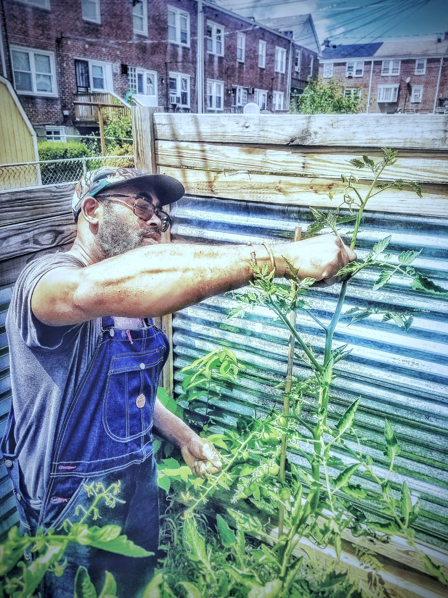

Feeding
the Revolution
The time is now
Our goal is to build a more sustainable and just food system for all. Community plays a crucial role in food security and urban agriculture. In urban areas, where access to fresh, healthy, and affordable food can be limited, community-based initiatives that focus on growing food locally and sustainably can help improve access to healthy food and reduce food insecurity.
ExploreA sustainable future
Our goal is to build a more sustainable and just food system for all. Community plays a crucial role in food security and urban agriculture. In urban areas, where access to fresh, healthy, and affordable food can be limited, community-based initiatives that focus on growing food locally and sustainably can help improve access to healthy food and reduce food insecurity.
Get InvolvedHelp us ignite change
Our goal is to build a more sustainable and just food system for all. Community plays a crucial role in food security and urban agriculture. In urban areas, where access to fresh, healthy, and affordable food can be limited, community-based initiatives that focus on growing food locally and sustainably can help improve access to healthy food and reduce food insecurity.
Join our Team!Urban Agriculture

Who We Are
Learn More
Who We Are
& What We Do
Revolt Urban Farms is a nonprofit organization that empowers urban residents to grow their own food and build a more sustainable community. Our mission is to encourage the optimization of lawn space in cities for growing food for consumption. Our goal is to reduce the carbon footprint of cities and to provide healthy, fresh food for those in need.
We offer research driven, solutions oriented approaches to sustainable and regenerative farming. Our experienced group of professionals and volunteers foster strong partnerships to maximize impact. Our programs place the needs of at-risk individuals at the forefront of our efforts, focusing on eradicating food deserts in urban areas and promoting access to healthy, fresh, and affordable food for all. Our programs include community gardens, urban farms, food cooperatives, and educational workshops, which are designed to empower local communities and create a more resilient and equitable food system.
In addition to our community-based initiatives, we are also committed to advocating for policy changes that promote sustainable and regenerative farming practices, reduce food waste, and support local food systems. We work closely with government agencies, schools, and other organizations to influence policies that create a more just and sustainable food system. Our advocacy efforts are informed by data and evidence-based research, and we engage community members in the policy-making process to ensure that their voices are heard. By combining community-based initiatives with policy advocacy, we aim to create lasting change and promote a more equitable and sustainable food system for all.
100% community based
Solutions oriented
Resource heavy for maximum impact.
Accessible resources for food education
Systemic Ineffeciences
Join the Urban Farming Revolution
01
COMMUNITY
Our goal is to build a more sustainable and just food system for all. Community plays a crucial role in food security and urban agriculture. In urban areas, where access to fresh, healthy, and affordable food can be limited, community-based initiatives that focus on growing food locally and sustainably can help improve access to healthy food and reduce food insecurity.
02
CULTIVATION
We are committed to exploring, studying, and implementing cutting edge urban agricultural strategies. We seek funding to invest in the research and development of new techniques that will enable us to empower city residents to plant, cultivate, and harvest their own food in backyards and community spaces.
03
COLLECTIVE
Urban agriculture collectives can provide an alternative model to conventional agriculture, which often relies on large-scale industrial farming and distribution systems. By working collaboratively, urban agriculture collectives can help create opportunities for economic development, increase access to healthy food, and promote environmental sustainability. They can also serve as a model for other urban agriculture projects and contribute to the development of more resilient and equitable food systems in urban areas.
Food Insecurity
What We Offer
Lean more about our jumpstart services.
Garden Consultation
FreeAdopt-A-Lot
EstimateOur Communities
Frequently Asked Questions
What is a green-space jump-start service?
Our green-space jump-start service is a comprehensive gardening service that transforms your yard space into a flourishing garden greenspace. We provide all the necessary resources and support to help you create and maintain a productive and sustainable garden.
Do I need any prior gardening experience to use this service?
No, you don't need any prior gardening experience. Our team of professionals will work with you to assess your space, create a customized design, and provide ongoing support and maintenance to ensure that your garden thrives.
What types of vegetables and fruits can I grow in my garden?
The types of vegetables and fruits you can grow in your garden depend on a variety of factors, including the climate, soil type, and sun exposure. Our team will work with you to select plants that are well-suited to your specific space and preferences.
How much does the service cost?
The cost of our green-space jump-start service depends on the size and complexity of your space, as well as the types of plants you want to grow. We'll provide a customized quote based on your specific needs and preferences.
How long does it take to create a garden space?
The time it takes to create a garden space depends on the size and complexity of your space, as well as the types of plants you want to grow. We'll work with you to create a timeline and schedule that meets your needs and preferences.
What kind of ongoing support do you provide?
We provide ongoing maintenance and support to ensure that your garden continues to thrive throughout the growing season. Our team will help you with watering, fertilizing, pruning, and other tasks as needed to keep your garden healthy and productive.
Power to the plant people
Contact
We'd love to hear from you! Your support and assistance is greatly appreciated. If you have any questions or would like to learn more about our organization, please fill out the form below and we will get back to you as soon as possible.